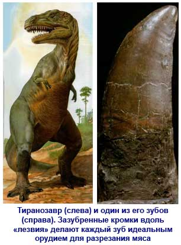
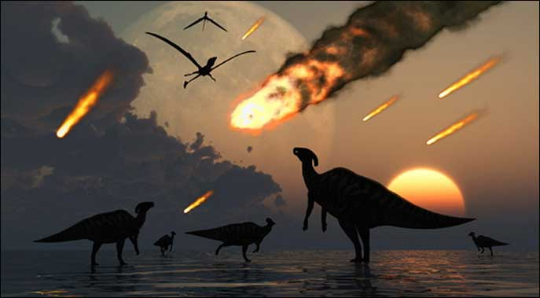
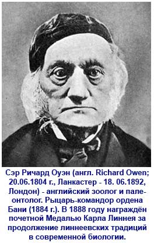
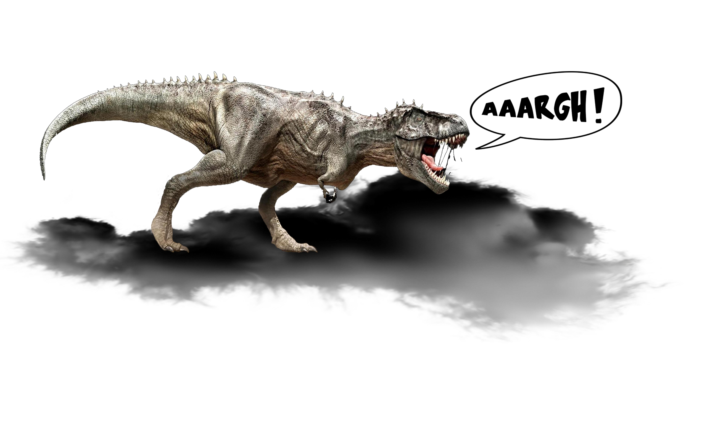

Привет!
Это Колян по жизни!
Основная информация о динозаврах
Динозавры - (лат. Dinosauria) — вымершие животные, составляющие многочисленный надотряд класса пресмыкающихся, обитавшие на Земле в период с 225 до 65 млн лет назад (в мезозойскую эру).
Надотряд динозавров относится к подклассу архозавров и делится на отряды ящеротазовых (Saurischia) и птицетазовых (Ornithischia).
Слово «динозавр» происходит от двух древнегреческих слов: страшный, ужасный, странный и ящер, ящерица. Термин введён в 1842 году английским биологом Ричардом Оуэном.
Ближе к концу триасового периода многие наземные животные, появившиеся в его начале, вымерли. Их место заняли новые рептилии, развившиеся на протяжении триаса.
Примерно 225 миллионов лет назад возникла группа рептилий, которых назвали текодонтами («ячеистозубыми»).
Поначалу это были неуклюжие приземистые животные, немного похожие на крокодилов. Они вели водный образ жизни и плавали при помощи мощного хвоста, загребая при этом задними ногами, которые были намного больше передних.
Когда ранние текодонты вышли из воды на сушу, их сильные задние ноги быстро приспособились к ходьбе по твердой земле.
Вскоре текодонты стали великолепными ходоками и бегунами. Большую часть времени они передвигались по суше на четырех ногах. Однако у них была способность превращаться в истинных спринтеров. Для этого текодонты принимали своего рода «стартовую позу»: отклонялись назад, опираясь на свои сверхразвитые задние конечности, и устремлялись вперед на двух ногах, балансируя на бегу длинным хвостом.
За последующие 20 миллионов лет текодонты развились в первых на Земле динозавров.
Подлинный расцвет и господство динозавров пришлись на юрский период.
За 140 млн лет своего существования они эволюционировали во множество самых разнообразных видов. Динозавры распространились по всем материкам и приспособились к жизни в самых различных средах обитания, хотя ни один из них не жил в норах, не лазил по деревьям, не летал и не плавал.
Одни динозавры были не крупнее белки, а другие весили больше пятнадцати взрослых слонов, вместе взятых.
Одни тяжело переваливались на четырех ногах, а другие бегали на двух ногах быстрее, чем олимпийские чемпионы в спринте.
Самой распространенной группой динозавров в юрском периоде были прозауроподы. Некоторые из них развились в самых крупных наземных животных всех времен — зауроподов («ящероногих»).
Это были «жирафы» мира динозавров. Вероятно, они проводили все свое время, поедая листья с верхушек деревьев. Чтобы обеспечить жизненной энергией такое громадное тело, требовалось невероятное количество пищи. Их желудки представляли собой вместительные пищеварительные емкости, которые непрерывно перерабатывали целые горы растительного корма.
Позднее появилось множество разновидностей небольших быстроногих динозавров — так называемых гадрозавров. Это были «газели» мира динозавров. Они щипали низкорослую растительность своими роговыми клювами, а затем пережевывали ее крепкими коренными зубами.
Самым большим семейством крупных плотоядных динозавров были мегалозавриды, или «огромные ящерицы». Мегалозаврид был чудовищем в тонну весом, с громадными острыми зубами, похожими на зубья пилы, которыми он разрывал плоть своих жертв.
Судя по некоторым окаменевшим следам, пальцы его ног были обращены внутрь. Возможно, он передвигался вразвалку, подобно гигантской утке, раскачивая хвост из стороны в сторону. Мегалозавриды заселили все районы земного шара. Их ископаемые останки обнаружены в таких удаленных друг от друга местах, как Северная Америка, Испания и Мадагаскар.
Ранними видами этого семейства были, по всей видимости, относительно небольшие животные хрупкого телосложения.
А более поздние мегалозавриды стали поистине двуногими чудовищами. Их задние ноги оканчивались тремя пальцами, вооруженными мощными когтями. Мускулистые передние конечности помогали при охоте на крупных растительноядных динозавров. Острые когти, несомненно, оставляли ужасные рваные раны в боку захваченной врасплох жертвы. Могучая мускулистая шея хищника позволяла ему со страшной силой вонзать кинжаловидные клыки глубоко в тело добычи и вырывать из нее громадные куски еще теплого мяса.

В течение мелового периода на Земле продолжался «великий раскол» материков. Громадные массивы суши, образовывавшие Лавразию и Гондвану, постепенно распадались на части. Южная Америка и Африка удалялись друг от друга, а Атлантический океан становился все шире и шире.
Африка, Индия и Австралия также начали расходиться в разные стороны, и к югу от экватора в итоге образовались гигантские острова. Большая часть территории современной Европы находилась тогда под водой.
В открытом море, начинались владения быстроходных хищных рептилий. Среди них все еще встречались некоторые виды юрских плезиозавров и ихтиозавров. Однако на передний план вышли свирепые морские плезиозавры мелового периода, вроде эласмозавров, а также ящерицеобразные мозазавры.
В меловом периоде некоторые растения выработали новые, более эффективные методы распространения пыльцы. Так, цветковые (покрытосеменные) растения связали отныне свою судьбу с насекомыми.
Динозавры продолжали бурно эволюционировать, и их новые виды возникали на всем протяжении мелового периода. Главенствующей группой растительноядных динозавров стали утконосые гадрозавры. Они жили стадами, подобно современным антилопам.
Ближе к концу мелового периода по Северо-Американскому материку начали разгуливать массивные трицератопсы - крупнейшие из всех цератопсов и одни из последних динозавров, обитавших на Земле.
Небо мелового периода по-прежнему «патрулировали» птерозавры. Со времен триаса они проделали длительный эволюционный путь, и теперь среди них возникло множество новых форм.
Гигантская бесхвостая рептилия птеранодон летала над океаном и питалась рыбой. Птеранодон - один из наиболее высокоразвитых птерозавров. Скорее всего, он использовал свои громадные крылья, размахом до 8 м, чтобы свободно парить над океаном.
В конце мелового периода произошло нечто очень необычное и загадочное: в морях и океанах одновременно исчезли белемниты, аммониты, плиозавры, плезиозавры, ихтиозавры и мозазавры, на суше неожиданно вымерли все динозавры, а в небесах после окончания мелового периода не осталось ни единого птерозавра.
65 млн лет назад все динозавры внезапно вымерли...
Однако перед тем, как исчезнуть с лица нашей планеты, они оставили нам в горных породах подробный «отчет» о своей жизни и своем времени.
Ученые уже не одно десятилетие ломают голову над разгадкой тайны этого массового вымирания. Особенно их интересуют причины столь внезапного исчезновения динозавров...
На этот счет существует множество теорий.
Одни ученые считают, что главной причиной вымирания динозавров было изменение климата Земли, которое было вызвано всеобщим понижением температуры.
Другие придерживаются мнения, согласно которому наша планета столкнулась с гигантским астероидом. При таком столкновении в воздух, скорее всего, поднялось громадное облако пыли, которое поглощало солнечный свет, столь необходимый для всех живых существ.

Третьи утверждают, что млекопитающие, размножившись, съедалии в огромных количествах яйца динозавров.
Есть мнение, что самые большие динозавры страдали от смещения межпозвоночных дисков, вызванного их громадным весом (а где же тогда делись меньшие динозавры?).
В некоторых теориях всю вину возлагают на внезапный грандиозный всплеск вулканической активности или на нескончаемые кислотные дожди, которые обрушились на Землю после ее столкновения с астероидом.
А один ученый (штат Индиана, США) предложил и совсем оригинальную гипотезу: динозавров погубили их собственные газы (так называемый метеоризм). Вырабатываемый их организмами метан разогрел земную атмосферу и создал своеобразный парниковый эффект. Это могло дать толчок глобальному потеплению климата, и однажды наступил момент, когда динозавры не смогли больше выносить такую жару...
Однако, какие бы причины не способствовали этому, а динозавры вымерли...
В 1825 году английский врач Мантель сделал сенсационное заявление: три года назад его жена Мэри нашла в уличном щебне булыжник, в которомОуэн Ричард были заключены зубы размером от четырех до пяти сантиметров. Поблизости в каменоломне тоже были обнаружены такие зубы и окаменевшие кости.

Поскольку зубы напоминали по форме зубы игуан - ящериц, встречающихся в Центральной и Южной Америке, - Мантель назвал вновь открытое животное игуанодоном (зуб игуаны).
Вскорости останки динозавров были обнаружены в Англии. В Германии в 1837 г. тоже были найдены кости некоего динозавра, которого профессор Герман Мейер назвал платеозавром (равнинным ящером).
В то время никому из исследователей не приходило в голову, что открытые животные, которые были известны только по фрагментам, относятся к самостоятельному виду пресмыкающихся.
В 1842 году английский биолог Ричард Оуэн (1804—1892 гг.), утвердив и доказав несомненное сходство между мегалозавром, игуанодоном и гилеозавром и их отличия от современных рептилий (сближающие, с другой стороны, с птицами и млекопитающими), выделил их в особый подотряд, которому дал имя динозавры (Dinosauria) — «ужасные ящеры».
Ричард Оуэн называл их «толстокожими вторичного периода», сравнивая таким образом с современными бегемотами и носорогами.
Ричарду Оуэну принадлежат и первые подробные реконструкции динозавров, хотя и не очень удачные с современной точки зрения - частично из-за недостатка материалов, а отчасти из-за общих представлений Оуэна и его эпохи.
Важным этапом в популяризации сведений о динозаврах стала Лондонская всемирная выставка 1851 г., когда в Хрустальном дворце были выставлены бетонные реконструкции динозавров в натуральную величину, изготовленные по рисункам Ричарда Оуэна.
На новый 1853 год Оуэн устроил внутри игуанодона торжественный банкет для своих коллег на 21 персону.
Большинство сведений о динозаврах ученые получили, изучая их ископаемые останки. Так, исследуя выпуклости, бороздки и отметины на окаменевших костях, узнают о размерах и форме мышц динозавров. Это, в свою очередь, позволяет определить форму и размеры тела животного.
На некоторых костях динозавров обнаружены следы повреждений, артрита, рака, а также нападений со стороны других, более сильных динозавров. А по ископаемым черепам определяют даже величину мозга динозавра.
И все же, сколько бы ученые ни разглядывали ископаемые останки динозавров, остаются вопросы, на которые у них нет точных ответов.
Например: какого цвета были динозавры?
Имелись ли у них на шкуре какие-либо маскировочные полосы или пятна?
Быть может, лесные динозавры были пятнистыми, вроде современной лани, а виды, обитавшие на открытой местности, — с черными и белыми полосами, как зебры, дабы хищникам было труднее их заметить?
В свою очередь, хищные динозавры также могли быть пятнистыми, как гепард, или полосатыми, как тигр. Возможно, одни только огромные травоядные зауроподы были сплошь серыми, наподобие слонов.
Увы, нам неизвестно даже, имелся ли у динозавров волосяной покров...
На этом сайте вы сможете узнать обо всех динозаврах, живших на нашей планете, чтобы показать их во всей красе. Ведь недаром эти удивительные рептилии считаются многими исследователями одной из самых удачливых и благополучных форм жизни, когда-либо существовавших на Земле...
